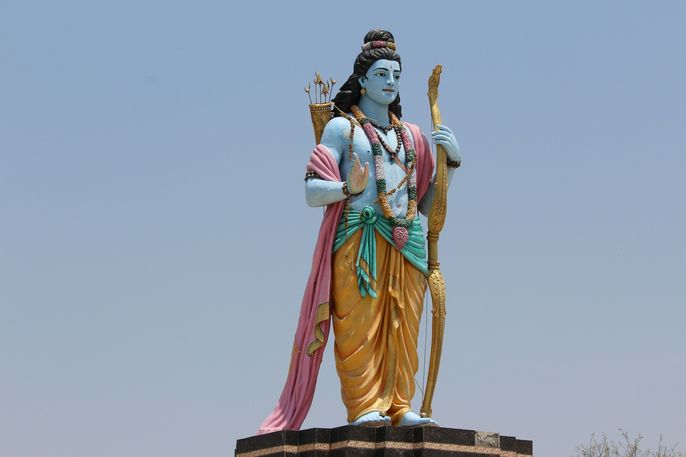
About Ramayana
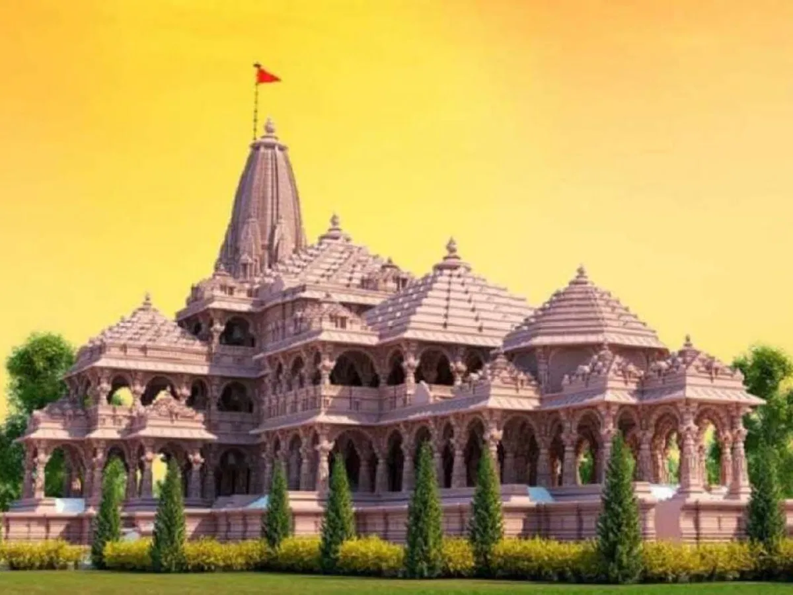
The Ramayana is an ancient Indian epic, composed some time in the 5th century BCE, about the exile and then return of Rama, prince of Ayodhya. It was composed in Sanskrit by the sage Valmiki. who taught it to Rama's sons, the twins Lava and Kush. At about 24000 verses, it is a rather long poem and, by tradition, is known as the Adi Kavya (adi = original, first; kavya = poem). While the basic story is about palace politics and battles with demon tribes, the narrative is interspersed with philosophy, ethics, and notes on duty. While in that other Indian epic, the Mahabharata, the characters are presented with all their human follies and failings, the Ramayana leans more towards an ideal state of things: Rama is the ideal son and king, Sita the ideal wife, Hanuman the ideal devotee, Lakshman and Bharat the ideal brothers, and even Ravana, the demon villian, is not entirely despicable.
Rama is born
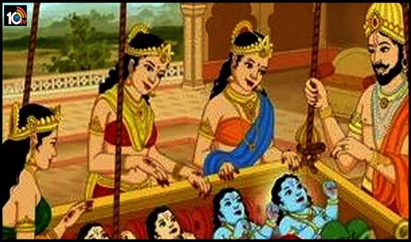
Dasharath, king of Ayodhya, had no children. So he arranged a Putra-kameshti sacrifice (putra = son, kameshti = that which is desired). At the sacrifice, Agni (god of fire) arose from the flames and handed the king a golden vase brimming with nectar. "Give this to your queens", said the god and disappeared. The king had three wives. To the eldest, the king gave half of the nectar; the second queen got a portion that remained when the queen had drunk her half. To the youngest queen, the king gave the remaining half of the nectar and again, the second queen got the portion that remained. In time, the queens gave birth to sons: to the eldest was born Rama, to the youngest was born Bharat, and to the second queen were born the twins Lakshman and Shatrughna.
Rama marries Sita
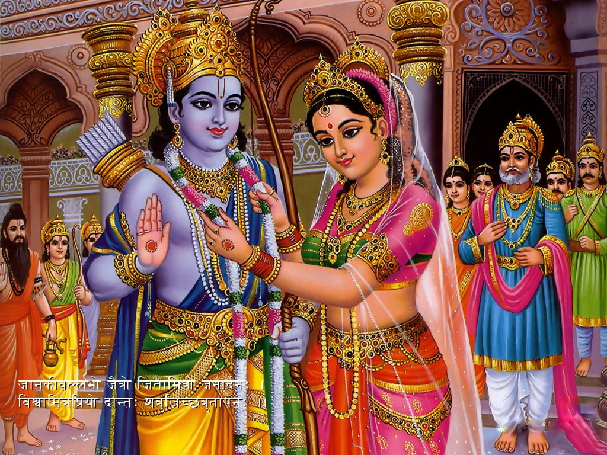
When the princes had grown up some, the sage Vishwamitra arrived at Dasharath's court and asked that Rama and Lakshman be "lent" to him to help him rid his hermitage of the demons that were plaguing the ashram dwellers by defiling their sacrifices with blood and bones, and by killing them off. After the two princes successfully rid the ashram of the demons, the sage took them to the neighbouring kingdom of Mithila to show them the swayamvar festivities of the Mithila princess, Sita, born of the earth. The king of that country had adopted Sita as his daughter and, after Sita had grown up, had declared that he would give her in marriage to anyone who could string the Great Bow of Shiva. No one could. Several kings, princes, and commoners had tried and failed. The swayamvar had been in progress for several months now and the bow still remained unstrung. It was to this place that the sage Vishwamitra brought the two princes of Ayodhya. Rama and Lakshamn entered the assembly hall where the bow was displayed in all its glory. Rama walked over, picked up the bow, strung it, and plucked the bowstring with such a twang that two things happened simultaneously: the twang was heard for miles around, and the force of it broke the bow into two with so great a sound that the king and his courtiers came running from their chambers to see what the commotion was about. When the confusion had settled, Rama was married to Sita. His three brothers were married to a sister and cousins of Sita, and there were many festivities and much rejoicing in the two kingdoms.
Rama is exiled
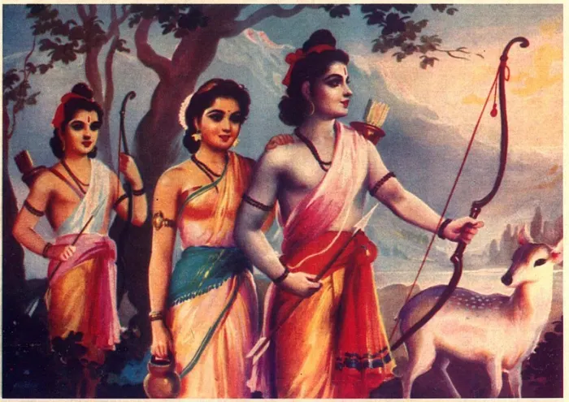
Some time later, Dasharath decided he had grown too old to rule and declared he would abdicate in favour of Rama, the eldest born and the crown prince. This is when his youngest queen invoked an old promise that Dasharath had made to her: she demanded that Rama be exiled for 14 years and that her own son, Bharat, be crowned king. Dasharath refused but Rama decided to honour his father's old promise and left for the forests. He was accompanied by Sita and by Lakshman, both of whom could not be dissuaded from following him. In grief at the injustice of it all and at Rama's departure, Dasharath died within two days. Bharat was not in Ayodhya when these events happened; he, and the fourth prince Shatrughna, were away holidaying at Bharat's maternal grandfather's country. They were summoned to Ayodhya in haste and, when Bharat learnt what had happened, he was furious. He shouted at his mother, refused to ascend the throne, and gathered the townsfolk around him to proceed to the forest and bring Rama back. Rama refused to return, stating his intention to serve his father's last wish by being an exile for the full 14 years. Bharat returned with Rama's sandals, placed them on the throne, and proceeded to rule the country in Rama's name. Meanwhile, Rama moved further south even deeper into the forests so that the people of Ayodhya would not find it easy to keep coming to his hut and begging him to return.
Ravana abducts Sita
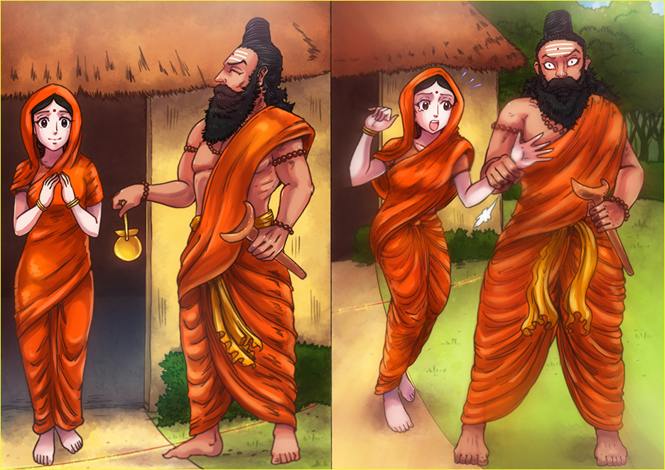
One day, a demoness named Surpanakha saw Rama and, being charmed out of her wits by his beauty, walked up to him and begged him to marry her. "I already have a wife", said Rama and pointed to Sita. "Why don't you marry my brother Lakshman instead?" When Surpanakha turned towards Lakshman, he declared he'd taken a temporary vow of celibacy and sent her back to Rama. What followed was that the brothers took turns to thus play ping-pong with her and when Surpanakha, by now angry beyond measure, rushed towards Sita to kill her, Lakshmana cut off Surpanakha's nose and ears. Surpanakha flew towards Lanka (modern Sri Lanka), ruled by her brother Ravana, and complained. Enraged, Ravana vowed vengeance. He persuaded the demon Marich to disguise himself as a golden deer and wander near Rama's hut. When Sita saw the golden deer, she begged Rama to get it for her. When the brothers were out pursuing the deer, Ravana arrived, abducted Sita, placed her in his flying chariot, and flew through the skies to Lanka. When the princes, after having killed the golden deer and discovered it was a demon in disguise, returned to their hut, they found it empty and started to look for Sita.
Rama meets Hanuman
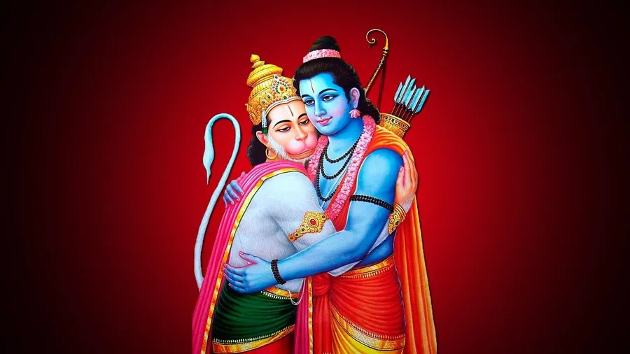
Hanuman meets Sita in Lanka
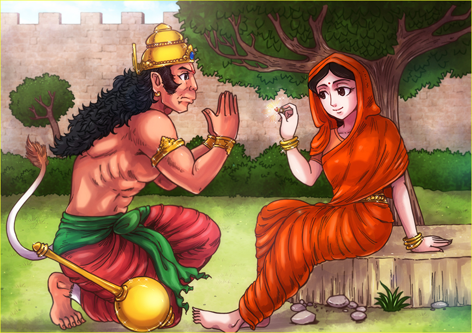
Hanuman sets Lanka on Fire.
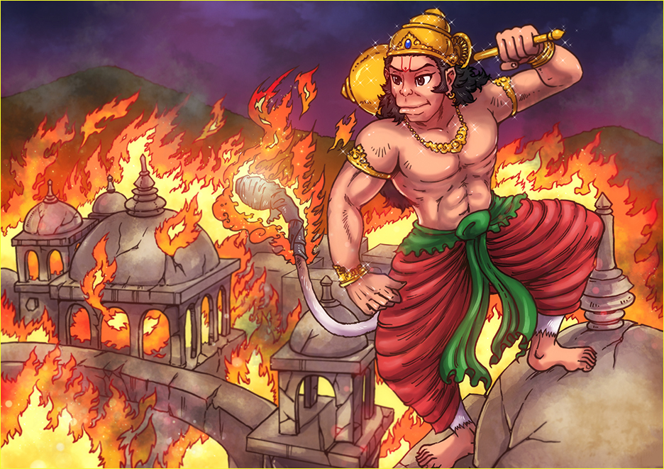
Rama and hunuman's army made "Ram Setu"
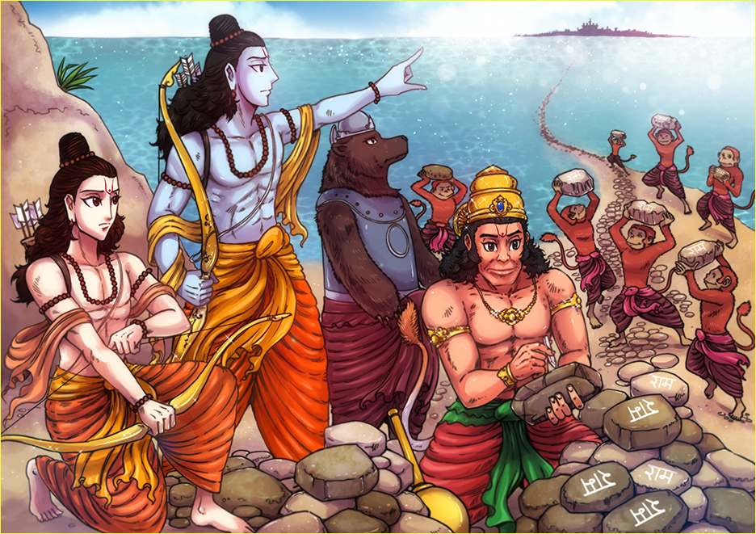
During their wanderings, the princes came upon a group of monkeys who showed them some ornaments of Sita's: the monkeys had seen a beautiful lady crying and dropping her ornaments from a chariot in the sky that was being driven southwards by a demon. Among the monkeys was Hanuman, who ultimately located Sita's whereabouts to be in Ravana's kingdom in Lanka. Rama gained the help of the monkey chief Sugreeva, gathered a monkey army, marched southwards, built a bridge across the ocean and crossed over to Lanka. Rama, after an epic battle, was then able to kill Ravana and finally free Sita.
Rama killed Ravana And then Sita faces a trial by fire
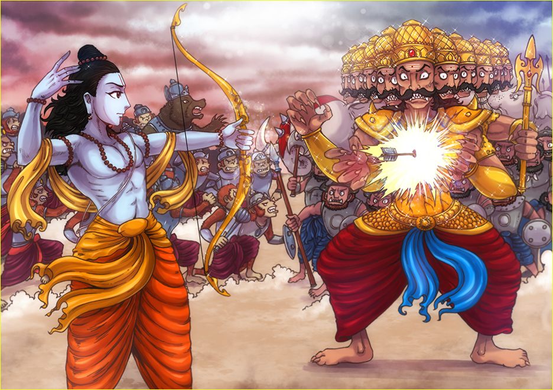
Sita faces a trial by fire
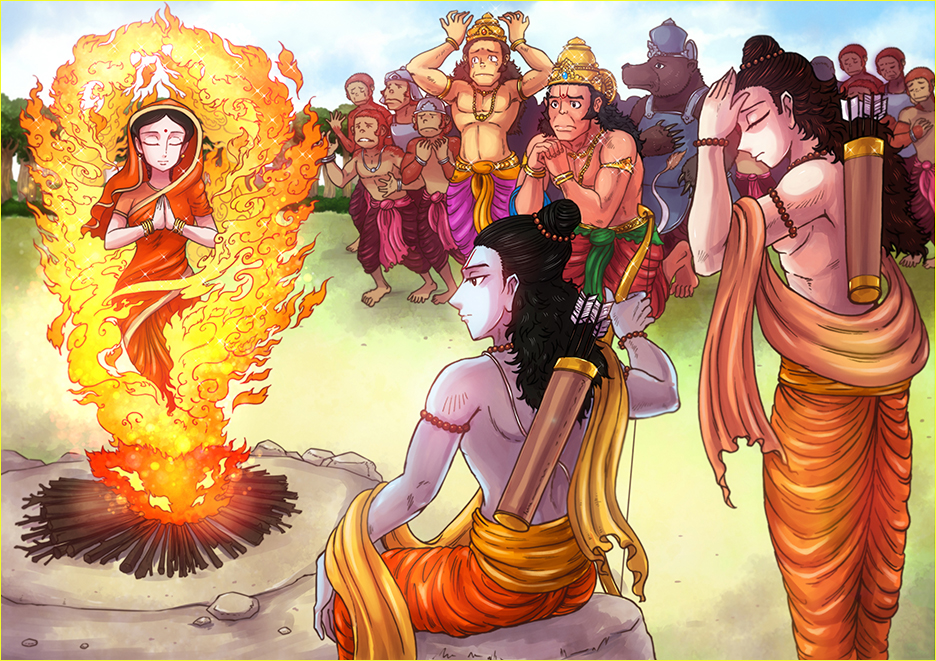
When Sita walked up to Rama, however, he refused to accept her since she had been a
living in a demon's palace all this while. Hurt, Sita entered into a burning pyre
intending to give up her life. However, Agni rose from the flames, carrying an
unhurt
Sita in his arms and said:
This event came to be known as the Agni Pareeksha (agni = fire, pareeksha = test).
Rama is crowned at Ayodhya
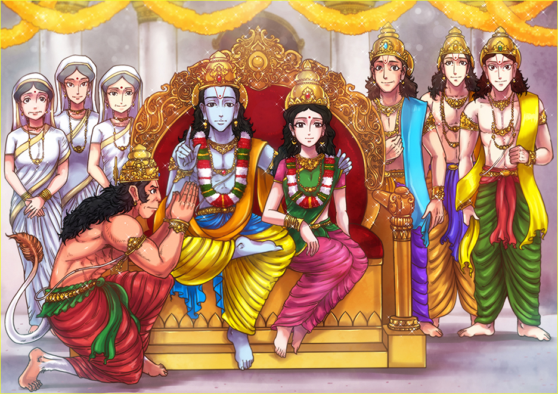
Since the 14 years were over by now, Rama then returned to Ayodhya, was crowned king, and ruled the kingdom with great wisdom: no child died before their parents did, no door needed locks against robbers, no farmland lay barren, no tree went fruitless, and there was peace and prosperity all around.
Sita is banished
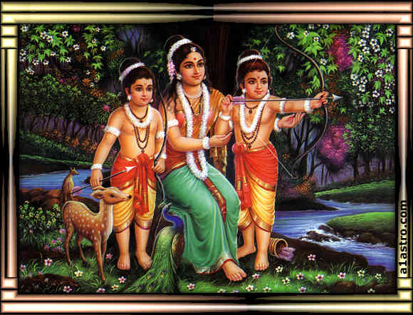
The Ramayana, as composed by Valmiki, is thought to have six chapters and to end at this happy point. A seventh chapter, called the Uttar-Ramayana (uttar = post, after, that which comes later) continues the story and ends on a slightly less happy note. This is how the story continues: After many months of Rama's rule, rumours began to surface among the populace regarding Sita's chastity since she had been abducted and imprisoned by a demon. Mindful of the feelings of his subjects, Rama asked Sita to undergo an Agni Pareeskha again. Sita refused, whereupon Rama banished her. Lakshman was deputed to escort her out of the kingdom; he did so unwillingly and left Sita near the hermitage of Valmiki.
Lava & Kush sing the Ramayana

Sita was pregnant at that time. Valmiki took her in as an ashram inmate, and she gave birth to her twins there: sons named Lava and Kush whom Valmiki brought up with great love and affection, teaching them princely skills such as archery as well as scholarly skills such as the Vedas and other scriptures. Valmiki also taught them to sing the Ramayana, which he had finished composing by this time. The twins, who were unaware of their parentage and, hence, unaware that they were singing about their own family, would recite the poem at gatherings. They became so well-loved for their sweet recitation that their fame reached Rama's ears who summoned them for a performance. It was here at Rama's court that the true story was revealed to the twins: that they, spitting images of the king, were his sons and that their mother was none other than the Sita whom they sang of Rama, in remorse, asked Sita to return to the palace if she could prove her chastity again before an assembly. Sita, in anguish, cried out, "O mother earth, just take me away from this place forever!" Whereupon the ground parted, the goddess Prithivi arose on a golden throne, took Sita in her lap, descended, and the rift closed. Sita was forever lost. Griefstricken, Rama decided to live no longer. He abdicated the throne in favour of his sons and, along with his brothers, entered the waters of the river Sarayu that skirted Ayodhya; their spirits left their bodies and ascended to the heavens.
Sita goes inside the earth And Rama Sunk into Saryu River
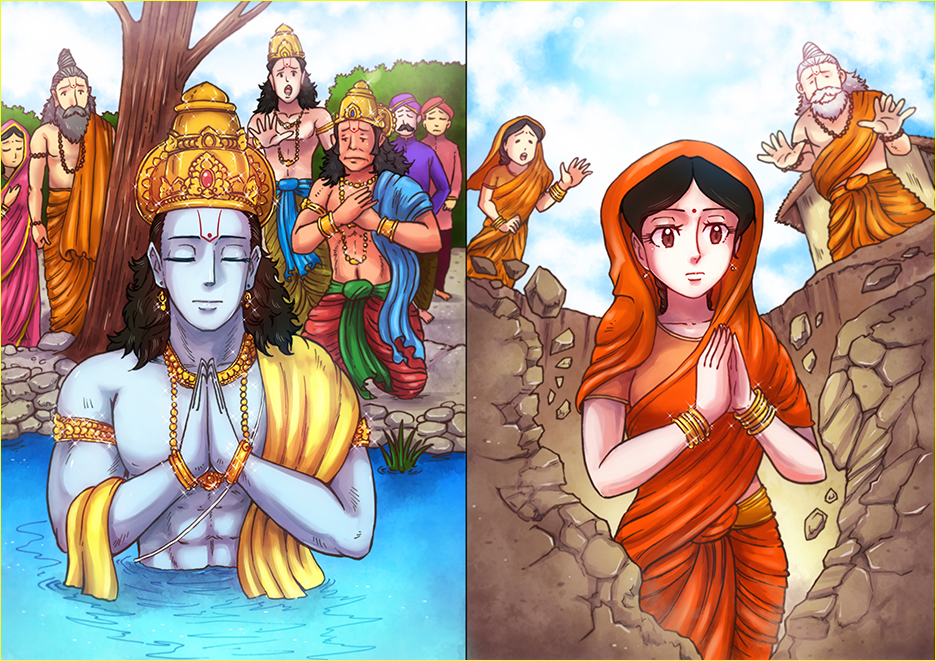
******** End of Ramayana *******
******** Jai Shree Ram *******
History of making Ram Mandir
Regional variations
The Ramayana was composed in Sanskrit. Over the years of re-tellings, several vernacular versions emerged that embellished the story, added regional touches, and inserted explanations and justifications for those bits that showed the hero, Rama, in a not-too-heroic light. The Ramavataram, composed by the Tamil poet Kamban in the 12th century CE, is popular in the southern parts of India. In the north, the Ramacharit Manas, composed by the Awadhi poet Tulsidas, is extremely popular. Other variations exist in Bengali, Malayalam, Telegu, Kannada, and other Indian languages.
legacy
The Ramayana's characters have found their way into the common speech and idiom of the land. Public recitations of the Ramayana are common. The epic has been adapted into plays and films; it is also enacted every year by local troupes and neighbourhood societies in North India during the Dusshera festivities of the present times. Scenes from the epic can be seen on the walls of some of the oldest temples across Asia. Rama is worshipped as an incarnation of god Vishnu, and it is not uncommon to find a Rama temple in almost every other neighbourhood in the country in the northern parts of India, especially in the Gangetic belt. In countries of South-East Asia, such as Cambodia, Indonesia, and Malaysia, the story of Rama continues to be told through intricately crafted shadow puppet shows.